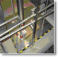

 金属管道封堵
1. 墙或楼板－以轻质或一般（100-150 pcf）混凝土建造。除了项目4的表有特别注明以外，此等墙或楼板至少应有4-1/2寸厚。可以利用UL分类中最小厚度为6寸的中空预铸混凝土块组成楼板。当楼板是由中空混凝土块组成，应该以垫底材料（项目3）与防火填充材料对称的安装于楼板的二面，并修饰至与楼板表面切齐；墙亦可用任何UL分类之〝混凝土块〞组成，在以轻质或一般混凝土建造的楼板上的最大开口为直径36寸的圆孔，在以中空混凝土块组成的楼板上的最大开口为直径7寸的圆孔。
※参照「混凝土块」（CAZT）及预铸混凝土元件(CFTV)分类篇于〝防火建材指南〞中制造商的名录。
1A.钢套管—（选项/未示于图中）—最大内径15寸Schedule10以上的钢制套管铸造于墙或楼板中。此套管可以超出楼板上方及墙二侧外缘2寸；铸造于墙或楼板的镀锌套管最大内径16寸，管壁最小厚度0.028寸，此套管最多可以超出楼板及墙二侧外缘1/2寸。
2.穿透元件—于防火系统的中心或非中心安装一支金属管或导管，于此防火系统中，介于金属输送管、导管或小管线与穿墙或楼板开口或套管的边缘之间的环状空间，是基于项目4中的参数而决定，其中最小环状空间为零（点接触）。应在楼板或墙的两侧给导管、输送管或小管线坚固的支撑。可于本防火系统使用下列形式及尺寸的金属导管或输送管
A. 直径30寸以下，Schedule 40(或以上)之钢制输送管。
B. 直径30寸以下之铸铁或软铁输送管。
C. 直径6寸以下的刚性钢制导管。
D. 直径4寸以下的钢制电气金属管线。
E. 直径6寸以下L型以上的红铜制管线。
F. 直径4寸以下标准型以上的红铜制管线。
3.垫底材料（未示于图中）－以Polyethylene backer rod或1寸厚的密致岩棉或绝缘玻璃纤维扎实的填塞于穿墙或楼板开口内，作为永久的垫底材料。以填塞防火填充物（项目4）所需深度，作为安装此垫底材料时应保留其顶端至楼板或墙二侧表面空间的基准。
4.防火填充物质－防火泥—填塞于穿墙楼板开口的环状空间到与楼板表面切齐。对于穿墙开口，应以防火泥对称的填塞于墙二侧开口内，直到与墙二侧表面切齐为止。在穿透物与套管或穿透物与混凝土的点接触部分，应以防火泥揉成最小直径为1/4”的珠珠，装设在楼板顶端与墙两侧表面。
(a) 于环状空间内填塞至少2寸厚的岩棉
(b)于楼板及墙两侧开口的环状空间内填塞至少1寸厚的岩棉。于楼板及墙两侧开口的环状空间内填塞至少1寸厚的防火泥至与该楼板及墙两侧表面切齐为止。 |